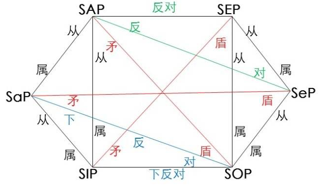

直言命题

直言命题对当关系注意
- 同素材
- 主项存在预设
- 矛盾关系优先
- 对当关系命题与实际命题的真假可能不一致
直言命题对当关系直接推理
矛盾关系
- SAP ⇔ ^SOP
- SEP ⇔ ^SIP
- SIP ⇔ ^SEP
- SOP ⇔ ^SAP
反对关系
- SAP ⇒ ^SEP
- SEP ⇒ ^SAP
下反对关系
- ^SIP ⇒ SOP
- ^SOP ⇒ SIP
差等
- SAP ⇒ SIP
- SEP ⇒ SOP
- ^SIP ⇒ ^SAP
- ^SOP ⇒ ^SEP
直言三段论
三个词项(小项:S,中项M,大项P)，两次重复
要点
- 包含单称命题做前提或结论的推理不是直言三段论
- 非直言命题做推理的不是直言三段论
- 包含4个项的不是
成立条件：
- 都是标准直言命题
- 三个直言必按大前提，小前提，结论的顺序排列
公理与规则
- 中项在前提中至少要周延一次
- 前提中不周延的项，结论中不得周延
- 两个否定的前提，得不出结论
- 如有一前提为否定，则结论必否定
- 如果结论否定，则必有一前提为否定
- 两个全称前提不能得出特称结论(有空概念时要加此判断)